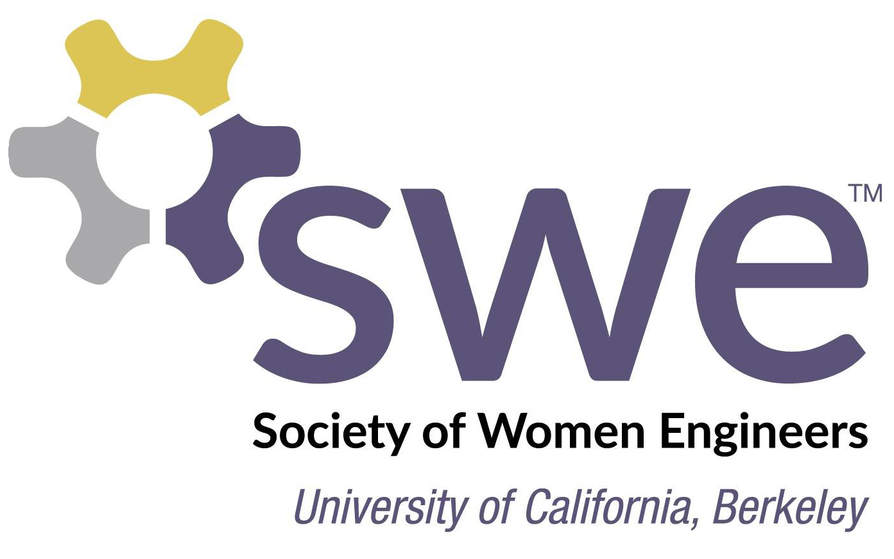

Team TechOfficers: Celestina Calarde, Annabel YauTeam Tech is a national competition run by SWE and sponsored by Boeing in which a team at school works with an industry partner on a project. The company and project is of each team’s choosing. Teams are evaluated both on the end product quality and the ability of the team to work together. Project proposals may be submitted during the fall semester after which teams may begin their work. The final report is due at the end of the spring semester, and the presentations occur at the SWE fall conference. |
|
SocialOfficers: Emma Hsu, Elizabeth Leong, Sneh GirdharAre you interested in hosting socials, such as ice skating or ice cream runs? If so, join Social Committee, where you can learn how to put on and participate in fun activities. |
HistorianOfficer: Kathleen ChangThe historian committee is a place for passionate photography and videography lovers. Here, we really learn and use new photography equipment and editing software to document SWE events. Join us and help record how SWE thrive! |
WebmasterOfficer: Shirley LiuThe website committee will help update the content of the website for various SWE events. You will also help implement new features and redesign the website. |
AdvocacyOfficers: Francesca Ledesma, Marleah PuckettThe advocacy committee will consist of 3-4 people. Since we plan to host two main advocacy workshops, we will have up to two committee members for each workshop-- one handles logistics and one handles public relations. Everyone will work together on the final event, the advocacy trip planned for November 3rd. Committee members must be comfortable reaching out to state representatives via email or phone call. |
Education LiasonOfficer: Karina MartinezAre you passionate about social justice and tackling the challenges faced by women and underrepresented minorities in STEM? Want to learn how to engage with your peers and professionals to advocate for diversity and inclusion? Apply to be a part of the Advocacy Education Committee! Throughout the semester, we will be organizing a Diversity and Inclusion Summit for January 2019, leading events centered around underrepresented minority specifically deal with, and organizing panels that discuss the diversity and inclusion environment in STEM. This would be an amazing opportunity for you to gain key communication and professional skills and more importantly, make the move towards creating a more inclusive environment for us all! |
Professional Development Month (PDM)Officers: Ian Rodney, Erin SongThe Professional Development Month committee is responsible for organizing Professional Development Month, a month long series of career development workshops (each partnered with an engineering company) aimed to prepare students seeking career experience. Committee members will be responsible for managing the logistics, publicity, and corporate relations of each event. We highly recommend this committee to anyone interested in event planning (you will be responsible for managing specific events as "day heads") and corporate relations! |
Evening with Industry (EWI)Officers: Asena Yildiz, Zoe HustedEWI is our premier networking event, and last year, we hosted more than 130 of UC Berkeley's best and brightest engineering students to meet with companies from all different engineering disciplines. EWI connect employers to students on a more personal and professional level through a career fair and a sit-down dinner. Join the EWI committee! |
Shadow an Engineer (SAE)Officers: Lucie Kresl, Megan HandleyShadow an Engineer is SWE’s externship program that provides undergraduate engineering students an opportunity to experience what it is like to be a full-time engineer at a company over Spring Break. We are looking for dedicated individuals to help put together our program this semester by directly communicating with companies, working on the student application, or helping publicize the program. |
OutreachOfficer: Louise FengThe outreach committee plans engaging hands-on engineering activities for K-12 students. As a committee member, you will be responsible for planning and volunteering at our various outreach events. Help teach and inspire the engineers of tomorrow! |
SWE++Officers: Bijal Patel, Maitri ShahSWE++ is a new committee under the Outreach committee. The goal is to expose middle school girls to Computer Science and provide them with a supportive atmosphere, mentorship, and connections with middle school girls from other schools. This fall will be our very first semester, and we will be hosting around 20 middle school students. Be a part of starting a completely new initiative under SWE that makes a direct impact! We have opportunities in curriculum development, web development, marketing, outreach, and logistics. |
Engineering DayOfficer: Yena KimEngineering Day is a fun event in October for K-3rd graders, and this year it will be on October 27th, 10 AM - 1 PM. There will be numerous booths featuring different hands-on activities that the students are able to try out for themselves. It is a fun opportunity for students to explore science and engineering concepts with a fun Halloween theme! Around 100 students are expected, as well as their chaperones, and they’ll be able to wander around, trying out the different activities in a casual, carnival style. We are hoping to have 10 booths with two chairs each to lead the participants and their parents through the activity, so please volunteer! Chairs will need to be present for the whole event (October 27th, 10 AM - 1 PM) and free lunch will be provided! We are also looking for people to help with planning the event, dealing with more of the logistical side. |
SWENextOfficer: Krutika IngaleSWENext is a platform in which high school girls can get access to mentorship, scholarships, and other virtual resources for pursuing a STEM career pathway. The program is intended to have female high school students become connected to the engineering community surrounding them, as a form of guidance towards a possible career in engineering. |
High School Outreach Program (HSEP)Officers: Jessica Au, Lavanya VijayanAre you passionate about engineering and interested in working with youth? Join our committee to become a mentor for UCB SWE’s High School Engineering Program (HSEP) and inspire the next females in engineering! Being involved in this committee will give you the opportunity to develop and improve your communication, teaching, project leading, and design skills! |
MentorshipOfficer: Veena NarashimanThroughout the program, Mentorship will need a team of dedicated mentors that will work with the high school students to facilitate towards the success of their projects. |
Mini UniversityOfficer: Sarah SpivackMiniU is an outreach event for high school students considering majoring in STEM related fields, with special consideration and emphasis for those from low-income backgrounds. The goal of the program is to get participants interested in engineering related careers and inspire them to pursue new experiences. |

|